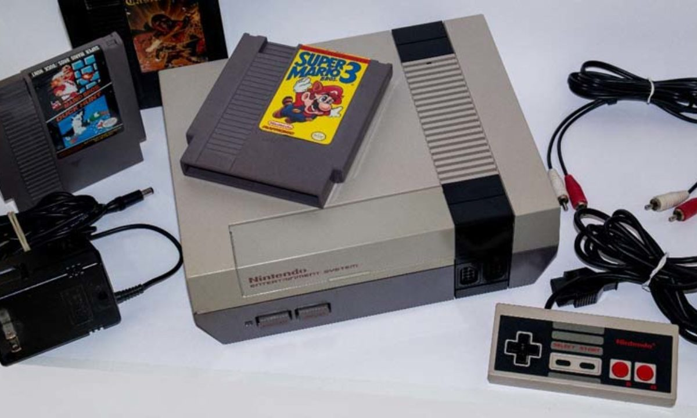

"NINTENDINHO"- NES (1983)
O NES/Famicom foi o videogame de maior sucesso comercial na sua época, ajudou a indústria de videogames a se recuperar da crise de 1983 e estabeleceu novos padrões que seriam seguidos pela indústria. Também foi o primeiro console a ser produzido por terceiros, o que ajudou a divulgar o sistema em todo o mundo. O NES também foi um dos primeiros consoles a se apoiar em jogos feitos por terceiros.
Especificações Técnicas:
Bits: 8 bits
CPU:1.66 Mhz
Memória: 2 Kb RAM - RAM de vídeo 2 Kb
Ecrã: 256 x 240 pixéis de resolução máxima, 52 cores, 8 x 16 pixéis de tamanho máximo por sprite, 64 sprite por ecrã.
Tamanho: 255 mm x 85 mm x 202 mm
Top 10 jogos:
- 1º Metroid
- 2º Contra
- 3º Mike Tyson’s Punch-Out!!!
- 4º Double Dragon 2
- 5º Teenage Mutant Ninja Turtles 3: The Manhattan Project
- 6º Ninja Gaiden II
- 7º Marble Madness
- 8º Rygar
- 9º Vice: Project Doom
- 10º Uncharted Waters